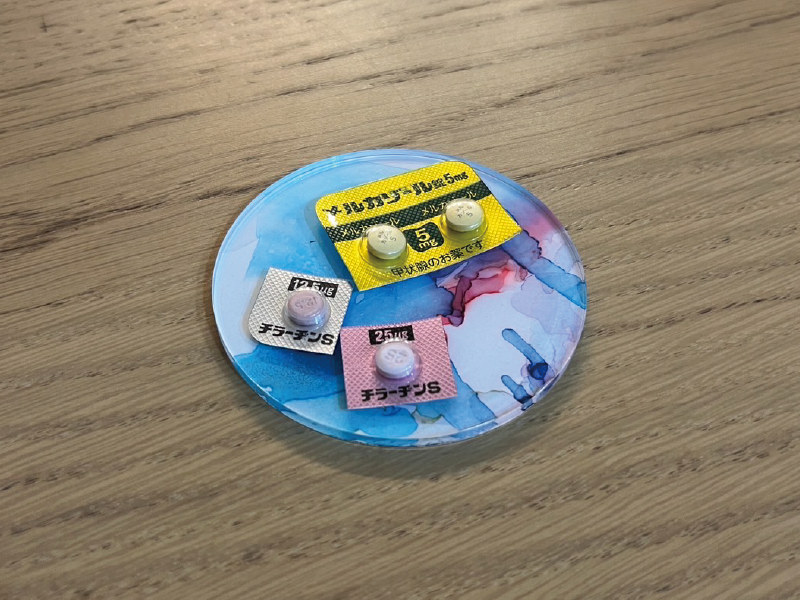

バセドウ病

卵子凍結のための検査で甲状腺ホルモンの数値がおかしいとお医者様に伝えられ「私の脳みそはどうなってしまったのだ…」と、ここでも心が折れました。
診断の結果はバセドウ病。確かに、病室で寝ているだけなのに脈が速く異様に汗をかき、不思議に思っていたところでした。眼球突出や喉の腫れは見られず、体重は6キロほど減っていましたが、バセドウ病が原因なのか入院で筋肉が落ちただけなのかよく分かりません。
現在はお薬を調整しながら寛解に向けて治療中です。体重もすっかり元通りに、どころか入院前より太っています。美味しいものを食べ尽くして、後悔なく死にたいと思います！